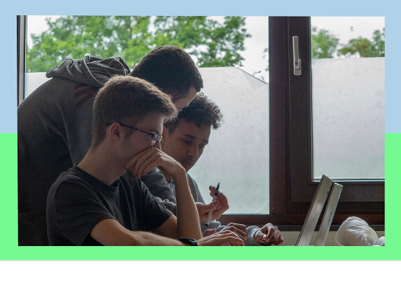

CodeDojo is een project waarin ik samen met een team een P5.js-codeerworkshop heb ontwikkeld voor middelbare scholieren. In deze workshop leerden de studenten hoe ze kunst kunnen maken met code. Ik speelde een grote rol in zowel de visuele kant als de technische uitwerking. Ik heb de website ontworpen en gecodeerd en droeg ook bij aan het werkboek, waarin we de basis van P5.js uitlegden en inspirerende voorbeelden gaven van wat de studenten zelf konden creëren.
Ik was verantwoordelijk voor het ontwikkelen van de instructies om jonge mensen op een toegankelijke en leuke manier te leren coderen. Deze instructies vormden de basis van een workshop die ik zelf heb gegeven op een school. Ik was de contactpersoon voor de school en had de communicatie met hen om alles in goede banen te leiden. Tijdens de workshop fungeerde ik als hoofdbegeleider en leidde de studenten stap voor stap, zodat ze een positieve eerste ervaring met coderen hadden. Daarnaast was ik verantwoordelijk voor de volledige branding van de workshop, van het logo en de kleuren tot de visuele stijl van het materiaal. Het was een leuke en leerzame ervaring om jonge mensen zonder programmeerkennis kennis te laten maken met programmeren, en het was geweldig om te zien hoe ze zich verbeterden en uiteindelijk werkende code zelf konden maken.
